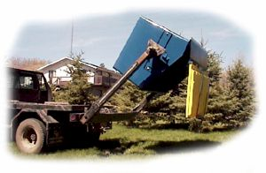

|  | Handling the bins is much the same as a round bale. The arms on the handler pick up the bin and set it in the back of the truck. The bin is hooked to the truck with a chain. At the waste transfer station, the bin is dumped as the arms are lowered, then the bin is set back in the truck and delivered back to its location. Some waste disposal companies are offering a rental service, which includes the rental of the bins and delivery of garbage to local waste transfer stations. |
Nifty Livestock Equipment Ltd.
1999-2005
About Nifty / Feed Equipment / Livestock ID / Handling Equipment / Dealers Page / Contact Us